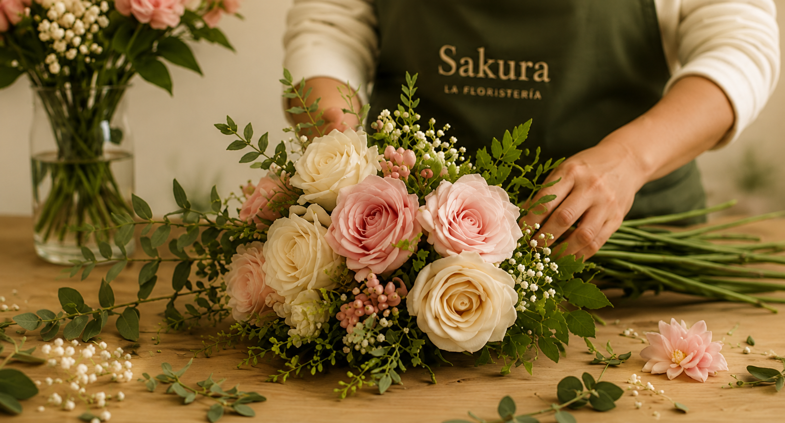

Flores que
cuentan historias
En Sakura, cada flor es elegida con amor para transmitir emociones y crear momentos inolvidables.
Descubre nuestras colecciones
NOSOTROS
Más que flores,
creamos emociones
En Sakura, creemos que cada flor tiene el poder de transmitir sentimientos y crear recuerdos inolvidables. Nos apasiona lo que hacemos y ponemos el corazón en cada detalle.
